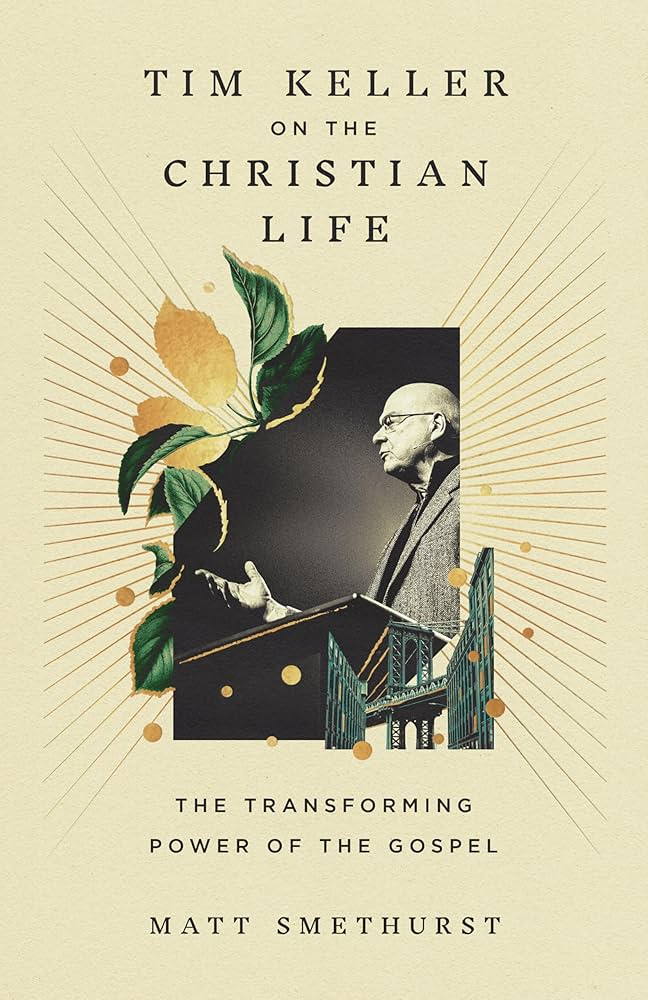

Tim Keller (1950–2023) left thirty-plus books and thousands of sermons from nine years in small-town Hopewell, Virginia, and nearly thirty at Redeemer in Manhattan. Matt Smethurst, a pastor who says plainly where he disagreed with Keller, doesn't write a biography or an evaluation. He distils Keller's best teaching on everyday discipleship into eight topics, and lets Keller talk. The thread through all of it: Jesus is the hero of the Bible and the cure for the human heart.
The shape of the book
Chapter one is the foundation; the other seven are, in Smethurst's words, "a tour of Scripture-derived imperatives": resist idolatry, avoid moralism, be a good friend, work for God's glory, live justly, pray fervently, suffer courageously. Keller's own warning frames them: don't preach moral demands without the gospel, and don't preach grace without showing how it changes a life.
Introduction
Keller converted at Bucknell in 1970: "before the change, I pored over the Bible… after the change it was as if the Bible, or maybe Someone through the Bible, began poring over me." He met Kathy at Gordon-Conwell seminary, and Collin Hansen says that to write about Tim is to write about Tim and Kathy, intellectual equals. R. C. Sproul married them in 1975.
Hopewell is where he learned to "put the cookies on the bottom shelf": three sermons a week to a blue-collar congregation, about 1,400 by age thirty-three. In a small town "your pastoring sets up your preaching"; in a big city "your preaching sets up your pastoring." He tried to recruit someone else to plant a church in New York, failed, and finally told his praying friends, "I have to do this myself." Redeemer started in 1989 and grew like a revival. Kathy's line: the secret to planting a megachurch is to find out where God is going to send a revival and move there the month before.
Smethurst calls him "a three-dimensional voice in a two-dimensional world": Bible teacher, cultural analyst and counsellor at once. His originality was synthesis. Asked why he cared about making the message clear to outsiders, Keller said: "I want people to fall in love with Jesus."
Chapter one
The Bible is not a collection of morality tales (be generous like the boy with the loaves) but one story: sixty-six books, forty-plus authors, fifteen centuries, one plot. Jesus said so himself on the Emmaus road: "beginning with Moses and all the Prophets, he interpreted to them in all the Scriptures the things concerning himself." The Old Testament is a room full of treasure, only dimly lit.
The young Keller found the Old Testament off-putting until Alec Motyer asked a small group to imagine an Israelite's testimony: we were in bondage under sentence of death, a mediator came, we sheltered under the blood of the lamb, he led us out, and he walks with us until we reach our true home. A Christian could say the same, almost word for word. Keller was "thunderstruck."
Keller's most famous passage (read it slowly, Smethurst says):
Keller names two errors: reading a passage without seeing the gospel, and jumping to Jesus so fast you skip the text. Once you know the ending, every earlier scene looks different, like a second viewing of The Sixth Sense. But the original story still matters. His sermon arc shows the balance: here's what we must do (put God first, like Abraham); we can't; one man did, on the cross; only now can we begin to live like Abraham. Moral application is good; it turns into moralism only when it is cut off from grace.
"The essence of sin is man substituting himself for God; the essence of salvation is God substituting himself for man." (John Stott, quoted by Keller)
Two ways to read the Bible, then: as all about you, which "crushes you into compliance," or all about him, which "melts your heart into wanting to obey." Every other worldview hands you an achieved identity, which is fragile. Only the gospel gives a received one.
Chapter two
"Missing the mark" is true but too thin. It makes a cosmic emergency sound like a lapse. Keller's view, which he got from Augustine, Luther, Calvin and Lloyd-Jones and which "hit him like a ton of bricks" just as Redeemer began: sin is at bottom a worship problem. We never break the other commandments without breaking the first. If we lie, our reputation has become more basic to us than Christ in that moment.
An idol is a good thing turned into an ultimate thing.
Smethurst admits he used to think "counterfeit gods" was a clever way of making sin sound less offensive. It turned out to be the opposite: a 3-D picture of yourself after years of stick figures, and an uglier one.
Sorrow versus despair is his favourite test. Sorrow has other sources of comfort; despair is inconsolable because you've lost an ultimate thing. Idols also block forgiveness: of two women in Hopewell with bad husbands and wayward sons, the less religious one forgave. The other finally blurted out, "If my son goes down the drain, my whole life will have been a failure." And "I know God forgives me but I can't forgive myself" usually means you have failed an idol whose approval matters more to you than God's.
Love, trust, obey: Scripture pictures idols as false lovers (look at your daydreams), false saviours (look at your nightmares) and false masters (look at what you can't stop feeling). The cure is not a new car but a new driver.
From a 1994 sermon. Name it, and call it theology, not just psychology: "Jesus is nice, but I have to have this too." Unmask it: "I see what you are. You've had me on a leash for years." Idols are slave traders dressed as abolitionists. Rejoice: "Jesus, you are my justifier, not this. You are my peace, not this." God's jealousy isn't insecurity; he sees you "in the arms of the idols" the way you'd watch a friend in love with someone who abuses them.
Weeds come back unless you plant something. Thomas Chalmers called it "the expulsive power of a new affection": an ultimate love can't be removed, only replaced by a stronger one. A teenage girl in Hopewell once said, "I know God loves me, but what good is that if I can't get any dates?" One truth was on audio in her heart, the other on video. Keller said he never forgot it.
Jesus is the only savior who if you gain him will satisfy you, and if you fail him will forgive you.Keller, Oxford Town Hall, 2012
The tool in the book
Chapter two in practical form: Keller's diagnostic questions, then his three steps. Use it when a feeling is bigger than the situation.
Practice
Your answers stay only in this browser on this device.
Name · Unmask · Rejoice
Chapter three
Keller loved choose-this-day preaching (Kathy joked that if he kept reading Whitefield he'd say "methinks" from the pulpit). But he came to think "God's way versus man's way" hides something. Romans 1 describes open rebellion; Romans 2 turns to look the religious reader in the eye. Dick Lucas showed him that the Sermon on the Mount contrasts God's way not with pagan immorality but with the Pharisees' way. So there are three ways to live: one way to be reconciled to God and two ways to avoid him.
Luke 15 is told to grumbling Pharisees. Keller heard Ed Clowney preach it and "almost felt I had discovered the secret heart of Christianity." He says no passage has helped more people when explained properly. The younger son goes the way of self-discovery; the elder, the way of moral conformity. Both want the father's things, not the father. And the story ends with the bad son inside at the feast and the good son outside, still lost.
"Jesus's purpose is not to warm our hearts but to shatter our categories."
The parable has a flawed elder brother so that we'd long for a true one, who leaves home to find us and pays for our return out of his own inheritance. One woman at Redeemer called free grace "good scary": if I'm saved by my works there's a limit to what God can ask of me. If by sheer grace, there's nothing he can't.
I have taken all my good deeds, and all my bad deeds, and have cast them together in a heap before the Lord, and have fled from both to Jesus Christ, and in him I have sweet peace.David Dickson, dying, 1662
Chapter four
We are the loneliest people in history, and Keller pastored in the most transient of cities. His starting point: "Friendship was never created." Father, Son and Spirit have always known and enjoyed each other, so even before the fall something was "not good": Adam alone. In The Bride of Frankenstein the monster becomes human only in the blind man's cottage, learning the word "friend." When the cottage burns he stumbles off saying, "Friend? Friend?"
The ancients ranked friendship highest because it is the most chosen of loves: family and romance push themselves on you; friendship never does. C. S. Lewis noticed that after Charles Williams died he had less of Tolkien, because Charles had brought out a side of him only Charles could. Keller's application: if it takes a varied group to know one ordinary man, it takes a church to know Christ. "You're lucky I'm even coming to church" isn't good enough. The church is a "pilot plant" of a new humanity, not a lecture hall or a club.
A true friend always lets you in and never lets you down.
None of that is distinctly Christian yet. Jesus fulfils both halves of the definition in John 15: he lets us in ("I have made known to you all that I heard from my Father") and he doesn't let us down ("greater love has no one"). At Calvary his arms aren't just open; they're nailed open. And his are wounds the friend bears, not inflicts.
Christian friendship journeys to the same horizon: a friend sees the "new self" behind the clouds and says, "I see who God is making you, and it excites me." Kathy's version for marriage: don't look for a finished statue, look for good marble. Lewis gets the last word: "Ye have not chosen one another but I have chosen you for one another."
Chapter five
The trigger was a soap-opera actor converted at early Redeemer who asked which roles he should take and whether method acting was all right. Keller realised he could disciple people for church activities but not for their jobs.
Work sits inside a bigger story: created good (God works for six days and kneels in the dirt to form Adam), cursed into toil, partly redeemed now, fully redeemed when Christ returns. Luther: God doesn't drop bread from heaven; he answers "give us this day our daily bread" by sending farmers, drivers and bakers to work. "God milks the cows through the vocation of the milkmaids."
"If you make work your identity and you succeed, it will go to your head. If you fail, it will go to your heart."
In Chariots of Fire, Harold Abrahams has "ten seconds to justify my existence"; Eric Liddell "feels His pleasure" when he runs and can skip the race on a Sunday. Same sport, same talent. "Abrahams was weary even when he rested. Liddell was rested even when he ran." Only in Christ is there "rest under the rest," because his work is finished. A Christian manager took the blame for a junior colleague's big mistake; when she asked why, he said Jesus took the blame for him. She came to Redeemer.
Tolkien, stuck on The Lord of the Rings, wrote about a painter who spends his life on a vast tree and finishes one leaf. On the way to the heavenly country he sees it, real, and cries, "It's a gift!" Keller: "There really is a tree." Whatever you are trying to make in your work, the just city, the beauty, the healing, it is real, and your leaf or two will not be lost.
Chapter six
Justice didn't come naturally to Keller. As a boy he shunned Jeffrey, the poor kid from under the Eighth Street Bridge, to protect his own shaky status. A doctorate on deacons, years leading the PCA's mercy ministries and serving on the board of an AIDS ministry in Philadelphia changed that. Then he noticed a pattern in both Hopewell and New York: the people most gripped by the message that God does not give us justice but saves us by grace became the most sensitive to injustice. One Hopewell convert, Easley Shelton, told him, "I've been a racist all my life," before Keller had preached a word on race.
Word and deed are "asymmetrical and inseparable." Don't confuse justice work with evangelism, and don't treat it as a distraction. Evangelism leads because the eternal outlasts the temporal; others can feed the hungry alongside us, but only Christians can offer new birth. Redeemer started Hope for New York in 1992.
"Don't sit down with a calculator; sit down with a cross."
Paul doesn't guilt the Corinthians into giving; he points them to 2 Corinthians 8:9: though he was rich, for your sake he became poor. The Good Samaritan widens "neighbour" to anyone in need, and also describes us lying half-dead on the road. Jesus is the Great Samaritan who came at the cost, not the risk, of his life. Born in a stable, buried in a borrowed tomb, executed after a rigged trial: God "left the wealthiest neighbourhood in the universe."
Chapter seven
Asked near the end what he would do differently: "Absolutely. I should have prayed more." His prayer book was his hardest to write. "In the second half of my adult life, I discovered prayer. I had to." Around 1999–2001 came 9/11, Kathy's Crohn's disease and his thyroid cancer, and Kathy's ultimatum: if a doctor said you'd die without a pill each night, would you ever forget it? We're not going to make it unless we pray together. They never missed an evening for more than twenty years, by phone if apart.
He had nearly not gone to New York, mainly because he knew his prayer life couldn't carry it. Women of more than 400 PCA churches prayed the plant into being. Kathy: "They prayed up a storm."
His tradition, from Augustine to Owen to Lloyd-Jones, showed him he didn't have to look for "something more" than doctrine; he had to ask the Spirit to help him experience it. Think it out (know what you believe), work it in (how would I be different if I believed this?), pray it up (turn it into praise, confession and requests). Conservatives who neglect experience will eventually lose doctrine too.
God will either give you what you ask, or what you would have asked if you knew everything he knows.
Keller prayed for a year that a girlfriend wouldn't leave him, and later thanked God that she did. John Newton: "Everything is needful that he sends; nothing can be needful that he withholds." Jesus' prayer in Gethsemane got the refusal we deserve so ours could get the reception he deserves.
Chapter eight
Smethurst thinks Keller was at his best here. Suffering is normal but not natural: Jesus was angry at Lazarus's tomb, so death is an intruder. And no culture has prepared people worse for it than the secular West, where suffering can only interrupt a life story, never be part of one.
Buddhism says accept it, karma says pay it, fatalism says heroically endure it, secularism says avoid or fix it. … If faced rightly, it can drive us like a nail deep into the love of God.
Suffering takes you further from God or closer; Keller never saw it leave anyone the same. "You don't really know Jesus is all you need until Jesus is all you have." After 9/11 he said God's love must be rubbed into grief like salt into meat. Modern stress advice says think less; Paul in Philippians 4 says think harder and longer about the big truths. Talk back to your heart like Psalm 42. Job never saw the big picture; "he sees only God."
When Donald Barnhouse's wife died, a truck passed the car on the way to the funeral. Would you rather be run over by the truck or its shadow? Only the shadow of death passed over her, he told his children, because death itself ran over Jesus.
Pancreatic cancer, diagnosed May 2020. "I felt like a surgeon suddenly on the operating table." He found he had partly slipped into assuming God lived for him; saying "Thy will be done" hurt at first and then freed him. He was not fighting cancer, he said, but his sin: "I'm going to die of something." He and Kathy stopped trying to make a heaven out of vacations and productivity, and found they enjoyed hugs, food and walks more than ever. "I've never been happier… but I've never had so many days of grief." His last prayers: "I'm ready to see Jesus. Send me home." He died on 19 May 2023, alone with Kathy, after saying, "There is no downside for me leaving, not in the slightest."
"Either Jesus is on the throne ruling all things for you, or this is as good as it gets."
Conclusion
Thousands queued in the August heat at St Patrick's Cathedral for a service Keller had planned himself: plain, Protestant, about Jesus. His last message to Redeemer, released the day he died, was Jeremiah 45:5: "Seekest thou great things for thyself? Seek them not." Ministers come to New York to make a name; "lift up Jesus's name." The gravestone near LaGuardia that he will share with Kathy reads:
Keep